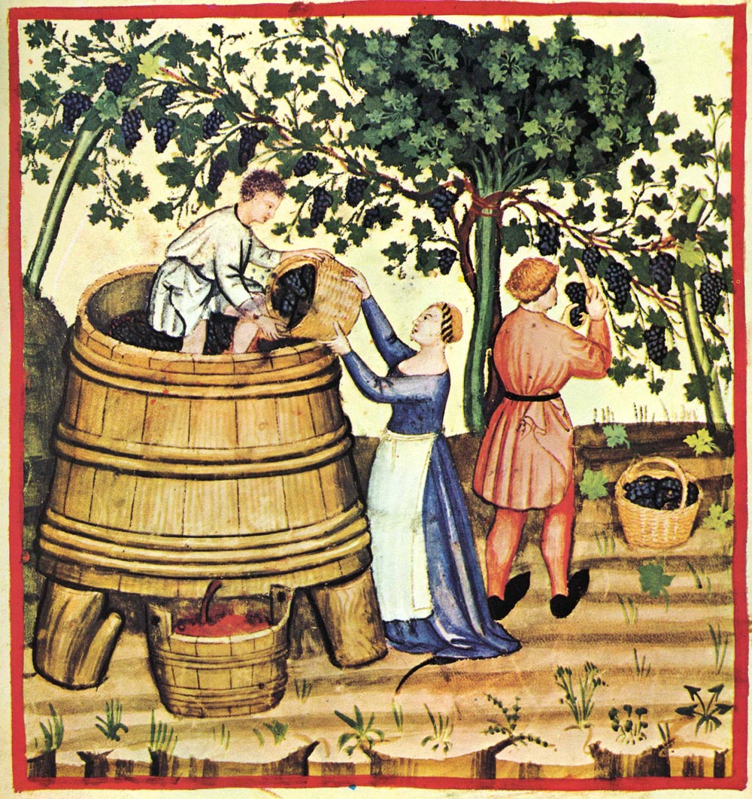
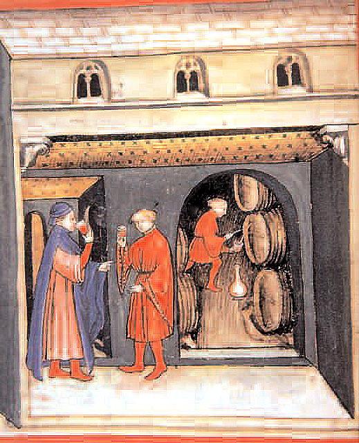
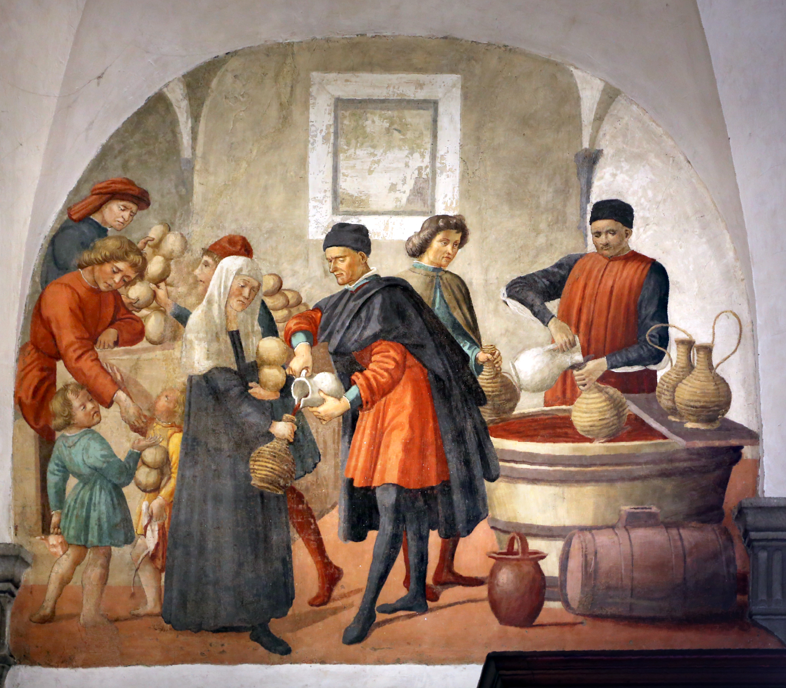
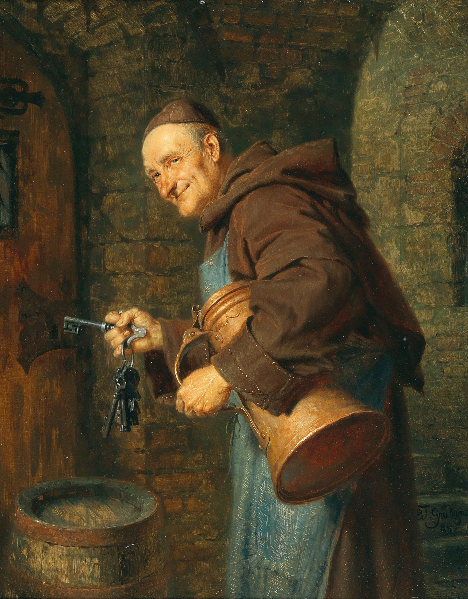
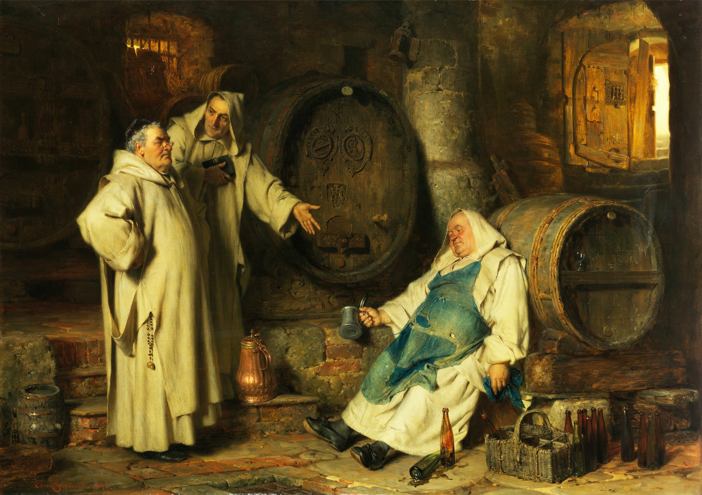
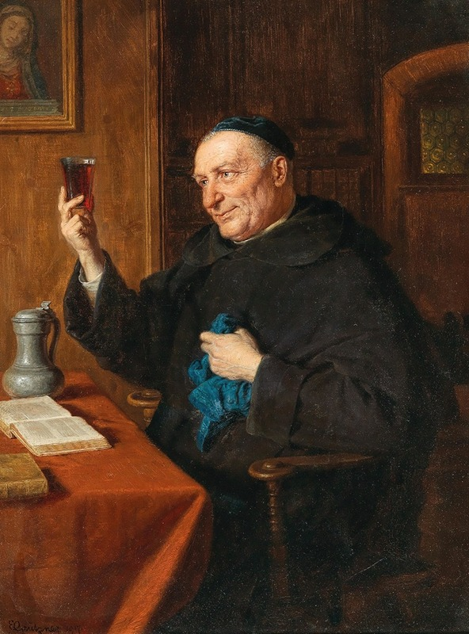

In the Middle Ages, monasteries made wine. Lots of it. Wine was not a luxury — it was an essential commodity, woven into the fabric of daily monastic life. Needed for the Eucharist, yes, but also consumed as real food. According to the Rule of Saint Benedict, each monk received a daily ration of about a quarter litre of wine. At some monasteries, the allowance was even more generous — at Westminster Abbey, monks received a full gallon of beer per day.
Wine wasn't merely permitted. It was expected. Monasteries across Europe became centers of viticulture, their monks dedicating generations to understanding soil, climate, and vine. The Benedictines, in particular, cultivated vineyards throughout France, Germany, Italy, and the Alpine regions. Because they weren't farming for profit or heirs, they could take the long view — experimenting, refining, passing knowledge down through centuries.
The hardest part wasn't making the wine. It was not drinking it.

the cellarer: guardian of the stores
And someone had to guard the cellar.
The cellarer — cellerarius in Latin — held one of the most important positions in any monastery. Chapter 31 of the Rule of Saint Benedict describes the role in detail: this was the monk responsible for all provisions, from food and drink to clothing and supplies. He managed the kitchens, the granges, the workers. At St. Augustine's Abbey in Canterbury in 1322, the cellarer oversaw a staff of more than thirty people.
But the Rule also understood the dangers of the position. Benedict specified that the cellarer must be "wise, mature in conduct, temperate, not an excessive eater, not proud, excitable, offensive, dilatory, or wasteful." The man who held the keys to the wine stores needed to be, above all, someone who could resist temptation.

The Tacuina Sanitatis — a medieval health handbook originally derived from an 11th-century Arab medical treatise by Ibn Butlan of Baghdad — offers a window into how wine was understood in this period. The lavishly illustrated manuscripts, produced for wealthy Italian households in the 1380s and 1390s, depicted wine not as abstract medicine but as part of lived experience: harvested by peasants, sold at market, poured at table. Wine was food, and food was health.

The Vienna Tacuinum Sanitatis, produced around 1390–1400 in the workshop of the illuminator Giovannino de' Grassi, contains 206 miniatures depicting plants, foods, and remedies — including scenes of wine cellars and tasting. The manuscript was designed for a non-specialist audience — likely noblewomen or wealthy patricians — but the images it preserves show how central wine was to medieval conceptions of health and daily sustenance.

wine as charity

In Florence, the Oratorio dei Buonomini di San Martino preserves a remarkable cycle of frescoes painted between 1478 and 1481 by the workshop of Domenico Ghirlandaio. The confraternity that commissioned them — the Buonomini, or "Good Men" — was founded in 1441 to help affluent families who had fallen on hard times. These were the poveri vergognosi, the "shameful poor" — nobles and merchants too proud to beg openly.
Seven lunettes in the oratory depict the charitable works: giving food and drink to the hungry and thirsty, clothing the naked, visiting the sick and prisoners, welcoming pilgrims, burying the dead. Above the entrance, the Buonomini are shown distributing wine and clothing to the needy. Wine appears here not as indulgence but as sustenance — an essential act of mercy.
the temptation in the cellar

Eduard von Grützner (1846–1925) made his career painting monks. The German artist, based in Munich, became famous for his genre scenes of monastic life — plump, rosy-cheeked friars sampling wine, dozing in cellars, raising glasses in convivial company. His monks are not saints. They are human, with all the weaknesses that implies.
Grützner understood something essential about the cellarer's burden. The monk who held the keys was surrounded by temptation every day. The wine was right there — barrels and bottles, the work of years, the sustenance of the community. And the cellarer was, after all, only human.

In Im Klosterkeller (1878), Grützner painted the scene that the Rule of Saint Benedict tried to prevent. Inside an old cellar, a drunken monk sits slumped against a wine barrel, still clutching a tin mug. Empty bottles litter the ground around him. Two standing monks in light robes observe the scene — one pointing at the fallen brother with an outstretched arm. The painting is comic, but also melancholic. This is what happens when the guardian fails.

Grützner returned to the theme throughout his life. His cellar scenes — monks tasting, monks dozing, monks debating the merits of one barrel over another — became his signature. He was knighted in 1916 for his contributions to art, but it was the monks that made him famous. Even in his final years, he kept painting them: men of faith, surrounded by wine, navigating the line between duty and desire.
So the question remains: would you be trusted with the key?
The cellarer's dilemma is timeless. Someone has to guard the good things. Someone has to be trusted not to take more than their share. The medieval monks understood this — they built entire systems around it, selecting their cellarers with care, spelling out the virtues required for the role. And still, as Grützner's paintings remind us, the temptation never quite went away.
The wine waits in the dark. The keys hang heavy. The question is always the same.